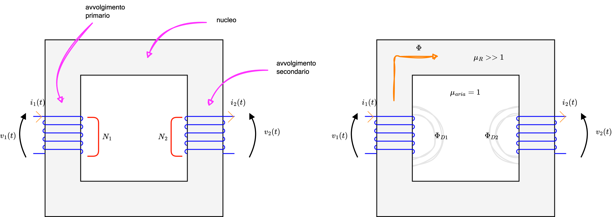
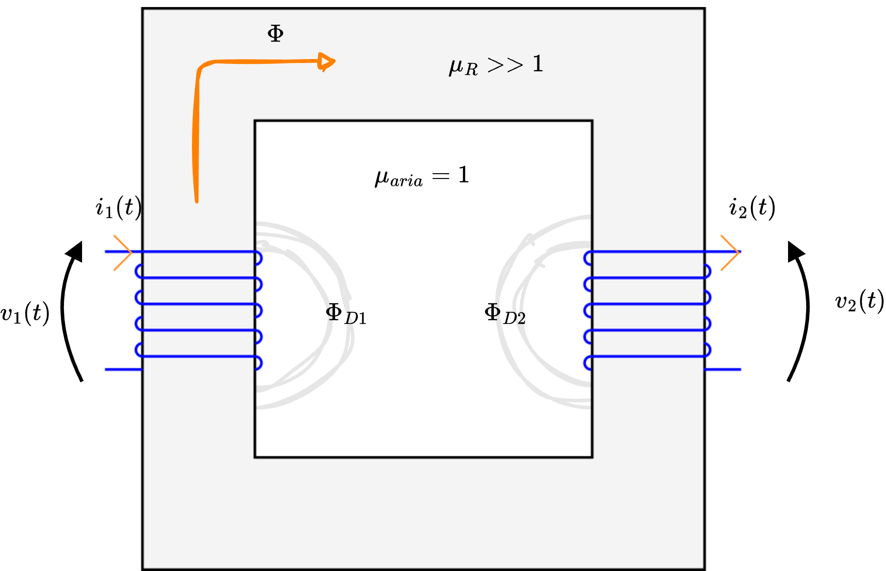
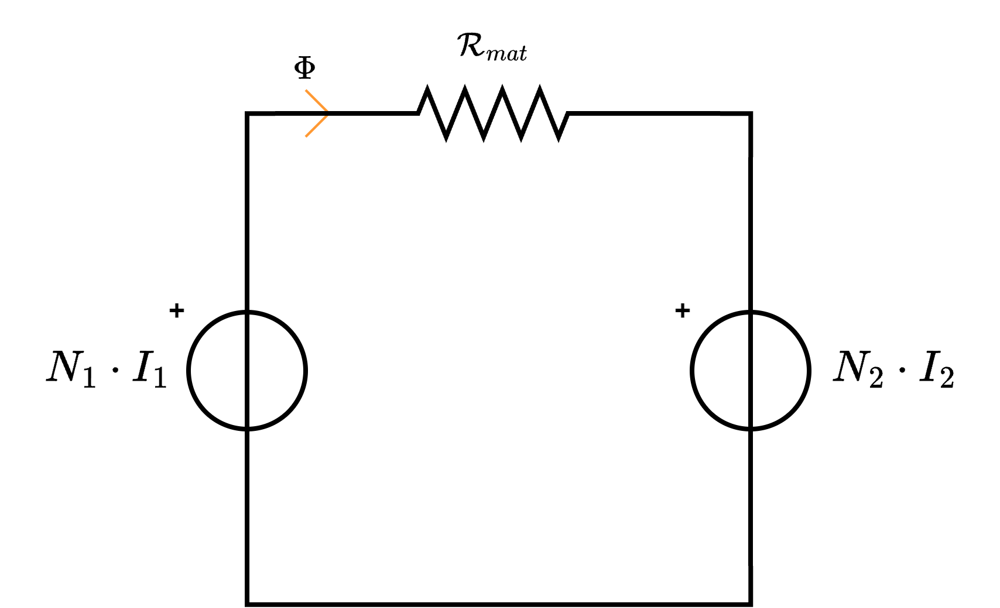

Definizione - Flusso concatenato
Considerando il caso di diverse spire in cui vi è passaggio di corrente, se sono poste ad una distanza ravvicinata si ha che il campo magnetico generato da una può generare una corrente in un'altra che a sua volta genererà un campo magnetico: in questa situazione è possibile definire il concetto di flusso concatenato con la \( j\)-esima spira.
In particolare, si ha che il flusso concatenato con la \( j\)-esima spira \( \Phi_{Cj}\) è uguale alla sommatoria dei flussi concatenati alla \( j\)-esima spira generati da tutte le spire, ovvero \[ \Phi_{Cj} = \sum_{k = 1}^{\#} \Phi_{Cj,k} \] dove con \( \Phi_{Cj,k}\) si indica il flusso concatenato alla \( j\)-esima spira generato dalla \( k\)-esima spira.
In particolare, si ha che il flusso concatenato con la \( j\)-esima spira \( \Phi_{Cj}\) è uguale alla sommatoria dei flussi concatenati alla \( j\)-esima spira generati da tutte le spire, ovvero \[ \Phi_{Cj} = \sum_{k = 1}^{\#} \Phi_{Cj,k} \] dove con \( \Phi_{Cj,k}\) si indica il flusso concatenato alla \( j\)-esima spira generato dalla \( k\)-esima spira.
Definizione - Coefficiente di auto e mutua induzione
Considerando il flusso concatenato nella \( j\)-esima spira e ipotizzando l'utilizzo di un "materiale lineare" per cui è possibile ottenere una relazione di linearità tra il flusso generato \( \Phi\) e la corrente \( i\), si ha che è possibile definire il flusso concatenato con la \( j\)-esima spira uguale a \[ \begin{array}{ccl} \Phi_{Cj} & = & \sum_{k = 1}^{\#} \Phi_{Cj,k} \\ & = & \sum_{k = 1}^{\#} M_{j, k} \cdot i_k \\ \end{array} \] dove \( M\) è un coefficiente che informa dell'interazione magnetica tra due spire.
In particolare, si ha che:
In particolare, si ha che:
- se \( j = k\) si ha un coefficiente di autoinduzione (e di solito è indicato come \( L_j\));
- se \( j \neq k\) si ha un coefficiente di mutua induzione (e si ha che \( M_{j,k} = M_{k, j}\)).
Nota bene - Relazione lineare
Nelle ipotesi iniziali si è considerato un materiale lineare al fine di ottenere una relazione lineare tra flusso \( \Phi\) e corrente \( i\). I materiali tuttavia non sono lineari ma saturano. È possibile comunque approssimare ad una relazione lineare nel caso di materiale dolci il cui ciclo di isteresi è ridotto (ndr, si ha infatti che vi è linearità tra campo magnetico \( \underline{H}\) e corrente \( i\) per la legge di Ampere e vi è linearità tra flusso \( \Phi\) e vettore induzione magnetica \( \underline{B}\), l'unico "anello mancante" è la linearità tra flusso e corrente dovuto al ciclo di isteresi). Al fine di rendere la relazione la "più lineare possibile", si utilizzano materiali dolci.
Definizione - Forza elettromotrice trasformatorica e mozionale
Considerando il caso di due spire poste a distanza ravvicinata, nel caso una corrente \( i_1\) attraversi la prima spira, sarà generato un flusso concatenato alla seconda spira, indicato con \( \Phi_{C2,1}\). In questo caso, secondo la legge di Faraday, nella seconda spira si genera una forza elettromotrice \[ fem_2 = -\frac{d \Phi_{C21}}{dt} \] Affinchè tale forza non sia nulla, è possibile che:
- vi sia una variazione nel tempo delle sorgenti del campo. Si ha quindi che al variare della corrente \( i_1\) (e quindi \( \frac{d}{dt}i_1(t) \neq 0\)) si ha una variazione del campo magnetico indotto \( B_{1}\) (e quindi \( \frac{\partial}{\partial t} \underline{B}_1 \neq 0 \)). Tale cambimaneto comporterà una variazione nel flusso magnetico \( \Phi_1\) (e quindi \( \frac{\partial}{\partial t} \Phi_1 \neq 0\)) che comporta una variazione nel flusso concatenato alla seconda spira \( \Phi_{C2,1}\) (e quindi \( \frac{\partial}{\partial t} \Phi_{C2,1}\)). Si ottiene quindi una forza elettromotrice detta trasformatorica (su cui si basano i trasformatori);
- vi sia uno spostamento dei due avvolgimenti. In questo caso si parla di forza elettromotrice mozionale (su cui si basano le macchine elettriche).
Definizione - Trasformatore monofase
Il trasformatore monofase è una macchina elettrica che permette di trasferire potenza tra l'avvolgimento primario e l'avvolgimento secondario attraverso un flusso magnetico. è possibile identificare i seguenti flussi magnetici:
Altre perdite sono quelle dovute al ciclo di isteresi e sono dipendenti dalla frequenza \( f\) e dal materiale. Al fine di diminuire tali perdite, si utilizzano materiali dolci.
Sono da considerare inoltre le perdite dovute alle correnti parassite. Per diminuirle, consideriamo la legge di Ohm \[ I = \frac{\underline{V}}{R_{mat}} \] Tale legge è quindi caratterizzata dalla resistenza del materiale \( R_{mat}\) \[ R_{mat} = \frac{L}{\sigma \cdot S} \] dove:
Per la legge di Faraday, sappiamo che \[ v_1(t) = \frac{\partial}{\partial t} \Phi_{C1} \] Considerando ora un "materiale lineare", si ha che \[ \Phi_{C1} = L_1 \cdot i_1(t) + M_{1,2} \cdot i_2(t) \] dove \( L_1\) è il coefficiente di autoinduzione mentre \( M_{1,2}\) è il coefficiente di mutua induzione. Sostituendo questo risultato alla tensione \( v_1(t)\) si ottiene che \[ \begin{array}{ccl} v_1(t) & = & \frac{\partial}{\partial} \Phi_{C1} \\ & = & \frac{\partial}{\partial t} \left[ L_1 \cdot i_1(t) + M_{1,2} \cdot i_2(t) \right] \\ & = & L_1 \cdot \frac{\partial}{\partial t} i_1(t) + M_{1,2} \cdot \frac{\partial}{\partial t} i_2(t) \end{array} \] È ora tuttavia necessario considerare che nel trasformatore reale sono presenti anche ulteriori contributi, ovvero \[ v_1(t) = L_1 \cdot \frac{\partial}{\partial t} i_1(t) + M_{1,2} \cdot \frac{\partial}{\partial t} i_2(t) + \frac{\partial}{\partial t} \Phi_{D1} + R_1 \cdot i_1(t) \] dove \( \frac{\partial}{\partial t} \Phi_{D1}\) è il contributo del flusso disperso mentre \( R_1 \cdot i_1(t)\) è dovuto alla caduta ohmica sul materiale.
Considerando ora che è possibile considerare \[ \Phi_{D1} = L_{D1} \cdot i_1(t) \] dove \( L_{D1}\) è detta induttanza di dispersione, si ottiene la seguente equazione \[ \begin{array}{ccl} v_1(t) & = & L_1 \cdot \frac{\partial}{\partial t} i_1(t) + M_{1,2} \cdot \frac{\partial}{\partial t} i_2(t) + \frac{\partial}{\partial t} \Phi_{D1} + R_1 \cdot i_1(t) \\ & = & L_1 \cdot \frac{\partial}{\partial t} i_1(t) + M_{1,2} \cdot \frac{\partial}{\partial t} i_2(t) + \frac{\partial}{\partial t} \left[ L_{D1} \cdot i_1(t) \right] + R_1 \cdot i_1(t) \\ & = & L_1 \cdot \frac{\partial}{\partial t} i_1(t) + M_{1,2} \cdot \frac{\partial}{\partial t} i_2(t) + L_{D1} \cdot \frac{\partial}{\partial t} i_1(t) + R_1 \cdot i_1(t) \end{array} \] Considerando di ripetere il ragionamento per \( v_2(t)\), che \( M_{1,2} = M_{2,1} = M\), si ha che le equazioni del trasformatore sono le seguenti \[ \left\{ \begin{array}{ccl} v_1(t) & = & L_1 \cdot \frac{d}{d t} i_1(t) + M \cdot \frac{d}{d t} i_2(t) + L_D \cdot \frac{d}{d t} i_1(t) + R_1 \cdot i_1(t) \\ v_2(t) & = & L_2 \cdot \frac{d}{d t} i_2(t) + M \cdot \frac{d}{d t} i_1(t) - L_D \cdot \frac{d}{d t} i_2(t) - R_2 \cdot i_2(t) \end{array} \right. \] e considerare di applicare LKT, ottenendo \[ LKT: \quad N_1 \cdot I_1 - \mathcal{R}_{mat} \cdot \Phi - N_2 \cdot I_2 \] da cui è possibile dedurre che \[ \mathcal{R}_{mat} \cdot \Phi = N_1 \cdot I_1 - N_2 \cdot I_2 \]

Caratteristiche
Il trasformatore è costituito da- un avvolgimento primario, caratterizzato da \( N_1\) spire;
- un avvolgimento secondario, caratterizzato da \( N_2\) spire;
- un nucleo di permeabilità magnetica \( \mu_R\).
- una macchina statica (senza parti in movimento);
- una macchina reversibile (è possibile utilizzare l'avvolgimento secondario come primario e viceversa);
- nel trasferimento, tensione e corrente possono variare (tipicamente nei tratti estesi si aumenta la tensione mentre nei carichi si aumenta la corrente);
- non genera energia;
- funziona solamente in corrente alternata, dato che per la legge di Faraday si ha che la forza elettromotrice indotta è uguale a \( \frac{\partial \Phi_C}{\partial t}\) (ed è quindi necessaria una variazione del flusso);
- considerando \[ P_2 = \eta \cdot P_1 \] dove \( \eta\) è detto rendimento, si ha che è caratterizzato da un rendimento elevato, in quanto tipicamente nella realtà si ha che \( \eta \gt 0.98\) (in un trasformatore ideale si avrebbe che \( \eta = 1\)).
Minimizzare le perdite
Nel trasformatore monofase
- \( \Phi\) è il flusso principale;
- \( \Phi_{D1}\) è il flusso disperso dal primo avvolgimento;
- \( \Phi_{D2}\) è il flusso disperso dal secondo avvolgimento.
Altre perdite sono quelle dovute al ciclo di isteresi e sono dipendenti dalla frequenza \( f\) e dal materiale. Al fine di diminuire tali perdite, si utilizzano materiali dolci.
Sono da considerare inoltre le perdite dovute alle correnti parassite. Per diminuirle, consideriamo la legge di Ohm \[ I = \frac{\underline{V}}{R_{mat}} \] Tale legge è quindi caratterizzata dalla resistenza del materiale \( R_{mat}\) \[ R_{mat} = \frac{L}{\sigma \cdot S} \] dove:
- \( L\) è la lunghezza del materiale;
- \( \sigma\) è la conduttività elettrica (caratteristica del materiale), uguale al reciproco della resistività \( \rho\);
- \( S\) è la superficie della sezione del materiale.
Equazioni del trasformatore
Al fine di calcolare le equazioni \( v_1(t)\) e \( v_2(t)\) in un trasformatore monofase reale, consideriamo il caso di un trasformatore ideale.Per la legge di Faraday, sappiamo che \[ v_1(t) = \frac{\partial}{\partial t} \Phi_{C1} \] Considerando ora un "materiale lineare", si ha che \[ \Phi_{C1} = L_1 \cdot i_1(t) + M_{1,2} \cdot i_2(t) \] dove \( L_1\) è il coefficiente di autoinduzione mentre \( M_{1,2}\) è il coefficiente di mutua induzione. Sostituendo questo risultato alla tensione \( v_1(t)\) si ottiene che \[ \begin{array}{ccl} v_1(t) & = & \frac{\partial}{\partial} \Phi_{C1} \\ & = & \frac{\partial}{\partial t} \left[ L_1 \cdot i_1(t) + M_{1,2} \cdot i_2(t) \right] \\ & = & L_1 \cdot \frac{\partial}{\partial t} i_1(t) + M_{1,2} \cdot \frac{\partial}{\partial t} i_2(t) \end{array} \] È ora tuttavia necessario considerare che nel trasformatore reale sono presenti anche ulteriori contributi, ovvero \[ v_1(t) = L_1 \cdot \frac{\partial}{\partial t} i_1(t) + M_{1,2} \cdot \frac{\partial}{\partial t} i_2(t) + \frac{\partial}{\partial t} \Phi_{D1} + R_1 \cdot i_1(t) \] dove \( \frac{\partial}{\partial t} \Phi_{D1}\) è il contributo del flusso disperso mentre \( R_1 \cdot i_1(t)\) è dovuto alla caduta ohmica sul materiale.
Considerando ora che è possibile considerare \[ \Phi_{D1} = L_{D1} \cdot i_1(t) \] dove \( L_{D1}\) è detta induttanza di dispersione, si ottiene la seguente equazione \[ \begin{array}{ccl} v_1(t) & = & L_1 \cdot \frac{\partial}{\partial t} i_1(t) + M_{1,2} \cdot \frac{\partial}{\partial t} i_2(t) + \frac{\partial}{\partial t} \Phi_{D1} + R_1 \cdot i_1(t) \\ & = & L_1 \cdot \frac{\partial}{\partial t} i_1(t) + M_{1,2} \cdot \frac{\partial}{\partial t} i_2(t) + \frac{\partial}{\partial t} \left[ L_{D1} \cdot i_1(t) \right] + R_1 \cdot i_1(t) \\ & = & L_1 \cdot \frac{\partial}{\partial t} i_1(t) + M_{1,2} \cdot \frac{\partial}{\partial t} i_2(t) + L_{D1} \cdot \frac{\partial}{\partial t} i_1(t) + R_1 \cdot i_1(t) \end{array} \] Considerando di ripetere il ragionamento per \( v_2(t)\), che \( M_{1,2} = M_{2,1} = M\), si ha che le equazioni del trasformatore sono le seguenti \[ \left\{ \begin{array}{ccl} v_1(t) & = & L_1 \cdot \frac{d}{d t} i_1(t) + M \cdot \frac{d}{d t} i_2(t) + L_D \cdot \frac{d}{d t} i_1(t) + R_1 \cdot i_1(t) \\ v_2(t) & = & L_2 \cdot \frac{d}{d t} i_2(t) + M \cdot \frac{d}{d t} i_1(t) - L_D \cdot \frac{d}{d t} i_2(t) - R_2 \cdot i_2(t) \end{array} \right. \]
Rappresentazione a parametri concentrati
Dato il trasformatore, si ha che è possibile considerare la seguente rappresentazione a parametri concentrati
Definizione - Trasformatore monofase ideale
Considerando un trasformatore monofase ideale, il cui simbolo è il seguente
è un trasformatore monofase in cui si considera che \[ R_1 = R_2 = L_D = \mathcal{R}_{math} = 0 \] Si ha quindi che le equazioni del trasformatore si riducono a \[ \left\{ \begin{array}{ccl} v_1(t) & = & N_1 \cdot \frac{\partial}{\partial t} \Phi \\ v_2(t) & = & N_2 \cdot \frac{\partial}{\partial t} \Phi \end{array} \right. \] È possibile calcolare il rapporto di trasformazione \( k\) come il rapporto tra la tensione \( v_1(t)\) e la tensione \( v_2(t)\), ottenendo che \[ \begin{array}{ccl} k & = & \frac{v_1(t)}{v_2(t)} \\ & = & \frac{N_1 \cdot \frac{\partial}{\partial t} \Phi}{N_2 \cdot \frac{\partial}{\partial t} \Phi} \\ & = & \frac{N_1}{N_2} \end{array} \] Considerando ora la rappresentazione a parametri concentrati per cui \[ N_1 \cdot I_1 - N_2 \cdot I_2 = \overbrace{\mathcal{R}_{mat}}^0 \cdot \Phi \quad \implies \quad N_1 \cdot I_1 - N_2 \cdot I_2 = 0 \] è possibile dedurre che il rapporto tra le correnti è il reciproco di \( k\), ovvero \[ N_1 \cdot I_1 = N_2 \cdot I_2 \qquad \implies \qquad \frac{I_1}{I_2} = \frac{N_2}{N_1} = \frac{1}{k} \]